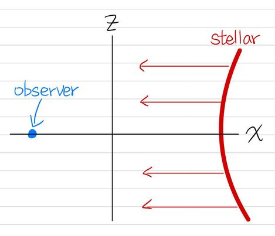

HYY Home
|
Hao-Yang Yen

Experience
|

Learning
|

Research
|

Explore
|
Plasma Astrophysics: Introduction to Magnetohydrodynamics and Simplify Stellar Model
I worked on project in 2024 spring.
Abstract
In this project, I delve into the foundational concepts of magnetohydrodynamics (MHD) and expound upon the MHD equations. Moreover, I undertake the construction of a simplified two-dimensional model representing stellar wind. By leveraging the MHD equations, I simulate the dynamics of this model. Through these simulations, we gain insights into various phenomena inherent in stellar winds. Furthermore, the comparison of our simulated results with real-world data enables us to validate and refine our understanding of these intricate processes.
Modeling
In order to streamline computational processes,
I opt to confine our analysis to the x and z axes within the model,
maintaining an assumption of uniformity in physical attributes along the y-axis.
In our endeavor to depict stellar winds, we observe a tendency for plasma to aggregate predominantly on the right-hand side and would never exhausted,
mimicking the natural behavior of stars. Through the utilization of numerical methodologies,
we embark on the task of simulating plasma parameters, aiming to capture and emulate these complex phenomena in our model.

Figure for the constructed model.
Simulation Results
It's clearly that we need to set the mass density accumulat on the right-hand side and therefore so does pressure at the beginning

Initial condition of \(\rho,p,\vec{v},\vec{A}\) (\(v_y=0,A_x=0,A_z=0\))

Simulation result of \(\vec{B},\vec{v},\rho\)
Distinguishing itself from the conventional dynamics observed in hydrodynamics,
the plasma under consideration displays a unique behavior,
with the capacity to flow in both the rightward and leftward directions within the system.
As the plasma traverses towards the left-hand side, it undergoes a discernible damping period,
marking a transitional phase in its motion. Meanwhile, the magnetic field surrounding the stellar body,
particularly on the right-hand side, manifests a distinct pattern of twisting,
indicative of the intricate interplay between magnetic forces and plasma dynamics.
This twisting phenomenon stands in stark contrast to the relatively uniform magnetic field observed on the left-hand side.
Moreover, as the system evolves over time, there is a noticeable tendency for the
magnetic field to gradually attain a state of rest or stationary equilibrium, marking a significant aspect of its temporal evolution.

Simulation result of \(\vec{B},\vec{v},\rho\)
The \(\vec{B}\) field noticeably experiences damping initially, gradually stabilizing as time progresses.
Concurrently, the field undergoes discernible changes in its evolution over time,
with the right-hand side twisted more obiviously.


Simulation result observed \(v(t)\) v.s. The real world data


Simulation result observed \(\rho(t)\) v.s. The real world data